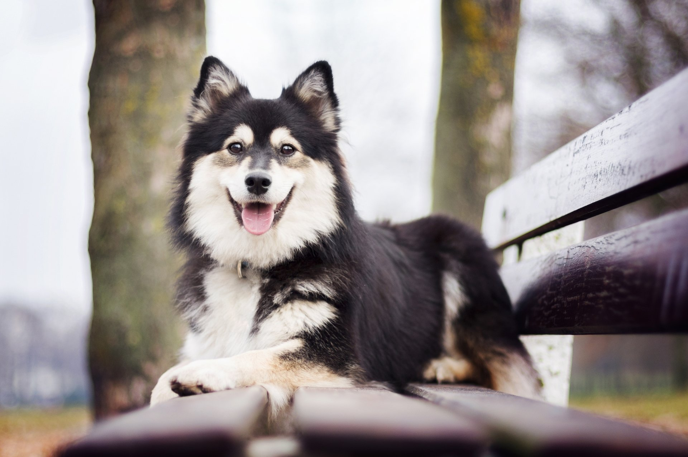
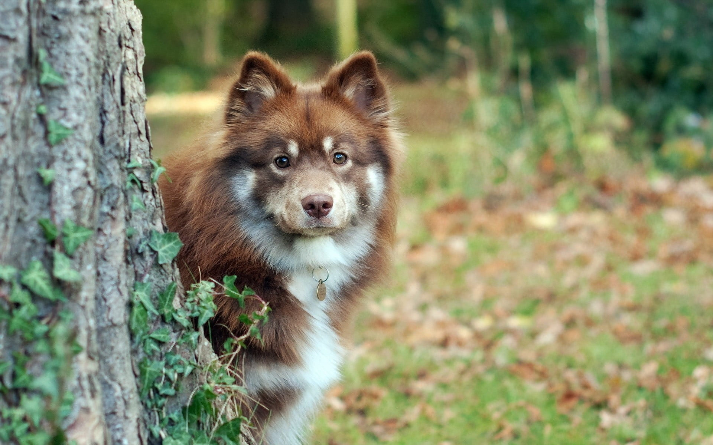
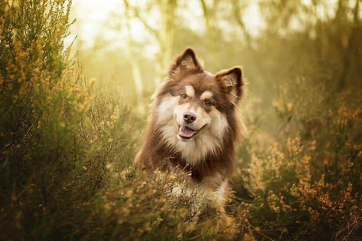

Finnish Lapphund

origin
Finland
size
Medium
color
Black
type
Purebred
breed group
Herding (AKC:2011), Northern Breeds (UKC)
character
Fluffy
temperament
Calm, Courageous, Faithful, Friendly, Keen
height
18–20 inches (46–52 cm)
weight
37-42 pounds (17-19 kg)
geography
Europe
overview
The Bernese Mountain Dog is slightly longer than tall, though it appears square. It is a sturdy, large, hardy dog capable of both draft and droving work. This requires a combination of strength, speed and agility. Its natural working gait is a slow trot, but with good reach and drive. Its thick coat is moderately long, and slightly wavy or straight, providing insulation from the cold. Its expression is gentle, and its coloring is striking.
The Bernese mountain dog is an easygoing, calm family companion (that is, after it leaves its adolescent stage). It is sensitive, loyal and extremely devoted. It is gentle with children and often reserved with strangers. It generally gets along well with other dogs and pets.
history
TThe Bernese Mountain Dog, or Berner Sennenhund in his native Switzerland, was used as an all-around farm dog by Alpine herdsmen in the canton of Bern. The dogs drove cattle to pasture, pulled milk carts to the dairy, and acted as watchdogs on the farm. Generally, Berners hauled milk in pairs, so it was common to see two of them hooked to a cart. Berners are thought to have descended from mastiff-type dogs who came to Switzerland along with Roman armies some 2,000 years ago. There they interbred with local dogs and were developed to help with farm work. With industrialization, however, the dogs almost disappeared. The breed was revived in the early 20th century to become a companion dog, although many still carried out their traditional farm duties as well. The American Kennel Club recognized the Bernese Mountain Dog in 1937.
Photo Gallery


